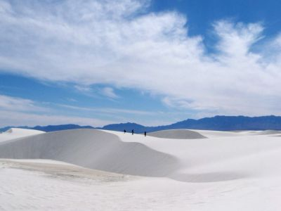
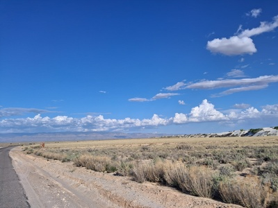
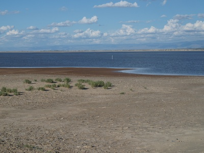
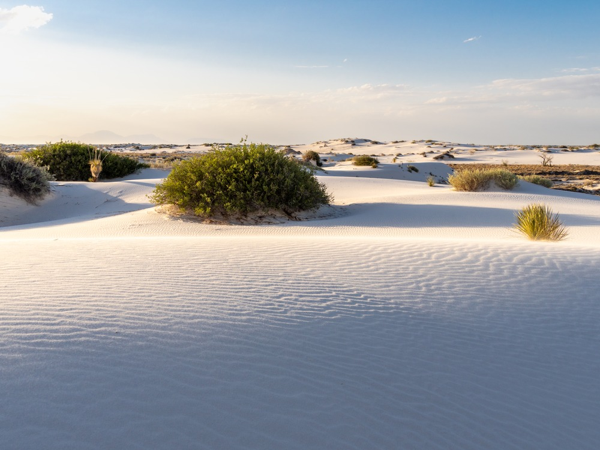
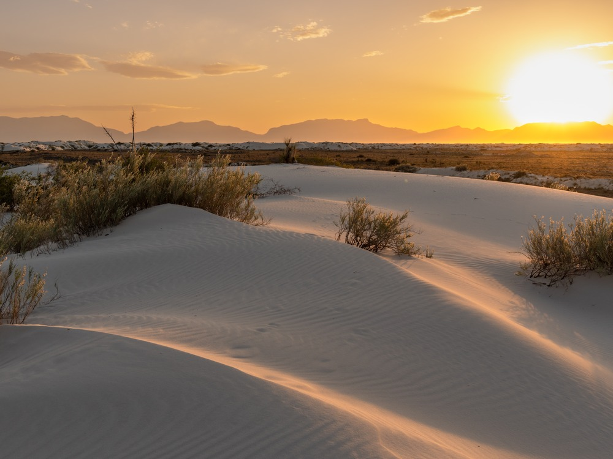
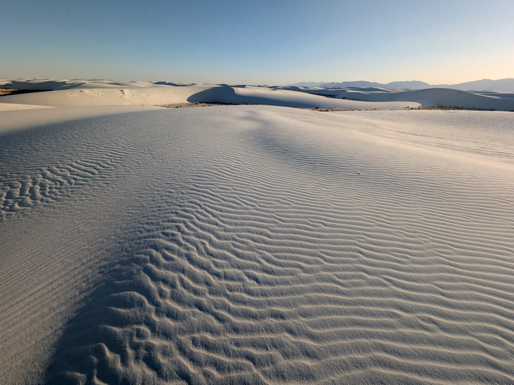
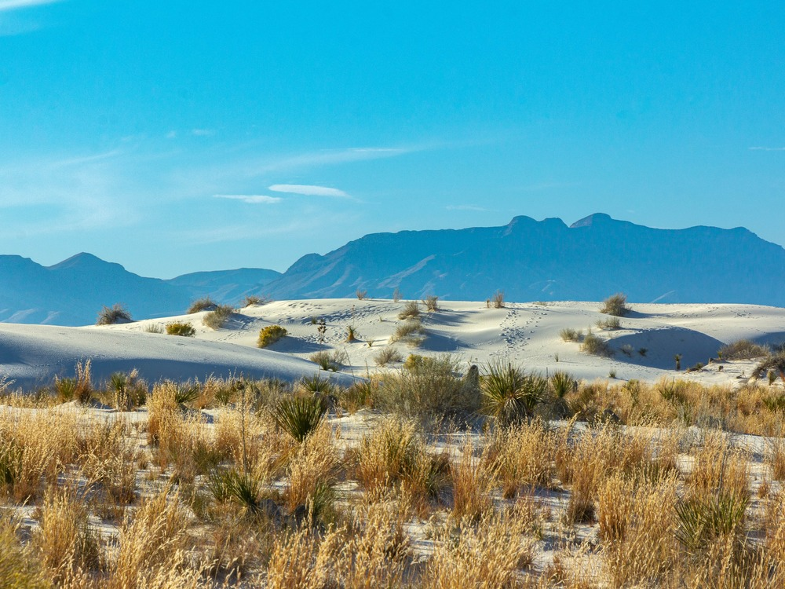
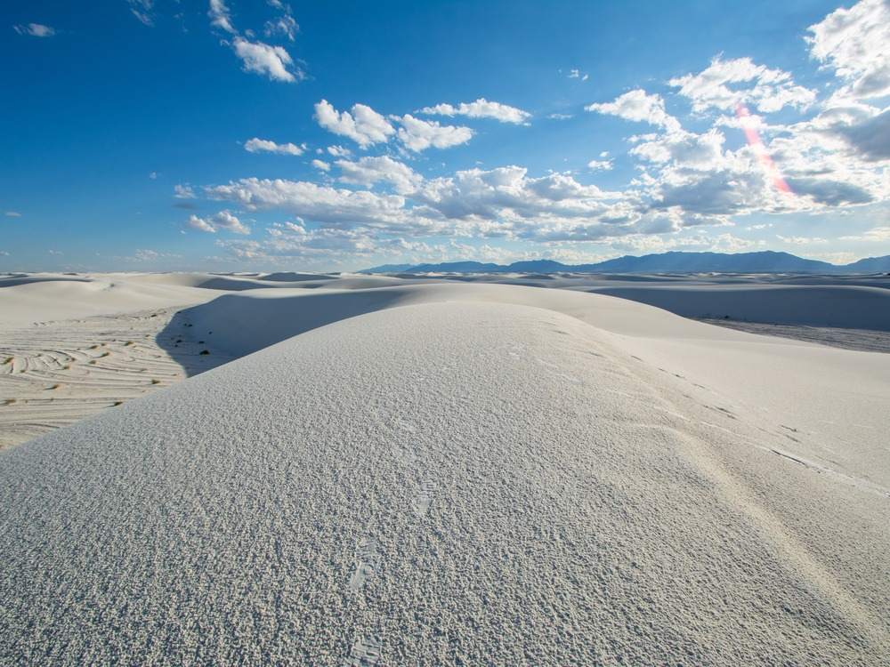
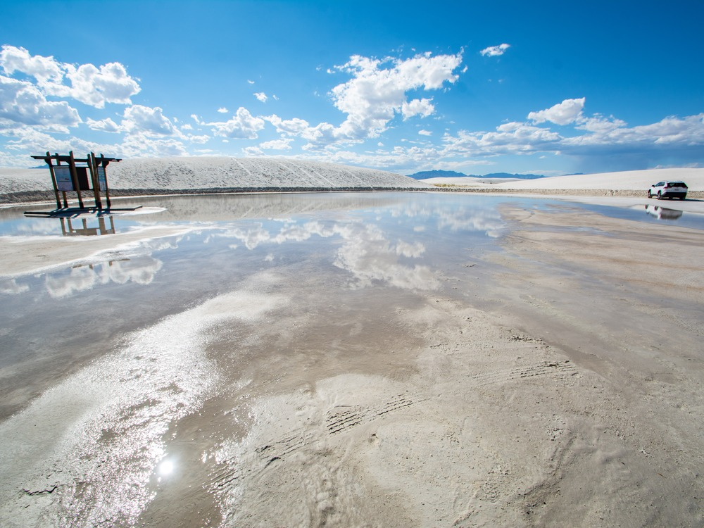
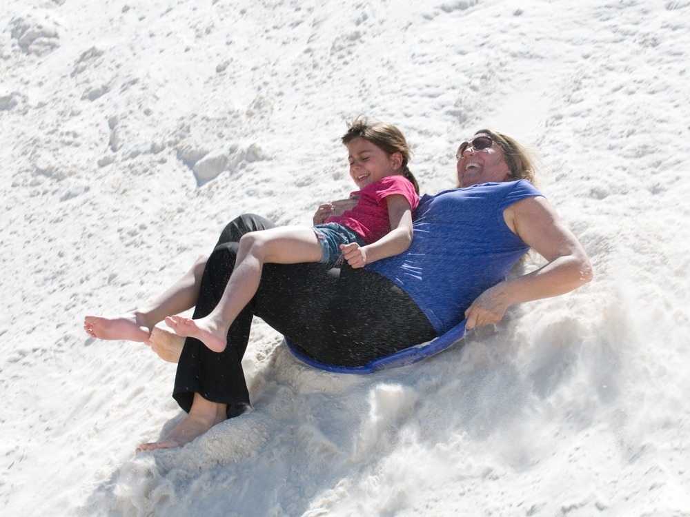

National park covers 275 square miles (710 km2) of white sand dunes composed of gypsum crystals
General Information
Closed on Thanksgiving and Christmas Day
Hours vary slightly throughout the year and may change due to missile testing schedules
Individual (walk-in/bike): $15
Motorcycle: $20
Children 15 and under: Free
How to Get There
From Alamogordo (16 mi): Drive west on US-70 for about 15 to 16 miles directly to the main entrance of White Sands National Park.
Overview
White Sands National Park in southern New Mexico protects the world's largest gypsum dune field, a rolling sea of glowing white dunes in the Tularosa Basin that rise as high as 60 feet. Gypsum is rarely found as sand because it dissolves in water, but the surrounding mountains have no outlet to the sea, so rain and snowmelt carry the mineral down into Lake Lucero, where it dries and is broken down by wind into fine, soft crystals. The result is a landscape that looks more like snow than desert, and it stays cool to the touch even in the summer sun. The park covers about 145,762 acres, roughly 40 percent of the dune field, and the rest lies within the White Sands Missile Range, which surrounds the park.
White Sands was protected as a national monument in 1933 for its unique geology and scenery, and Congress redesignated it a national park in December 2019. The park is popular because the dunes are easy to reach and easy to enjoy. Visitors come to sled down the dune slopes on plastic saucers, walk barefoot on the cool sand, photograph the rippled dunes at sunrise and sunset, and picnic in the shade of the park's shelters. It is also one of the best places in the Southwest to watch a full moon rise over the dunes, and rangers lead special programs on those nights.
Park Sections
White Sands has one main visitor area, reached from US-70 between Alamogordo and Las Cruces. The visitor center and the start of the Dunes Drive are at the park entrance, and nearly everything else is along the drive. Deeper in the dunes, the Heart of the Dunes area has the tallest and least vegetated dunes, picnic shelters, and the trailheads for the backcountry. Lake Lucero, the source of the gypsum, lies inside the missile range and is not open for casual visits. It can be reached only on a ranger-led tour offered on selected dates, so check the National Park Service website for the schedule.
Sightseeing and Exploring the Park
The eight-mile Dunes Drive is the park's main sightseeing route. The first part of the road is paved, and the rest passes through the dunes on packed gypsum sand, with the dunes sometimes rising on both sides of the road. Pull-offs and parking areas along the way let you step out onto the sand, and the Heart of the Dunes at the end of the road has picnic shelters and some of the best views. The drive is open to regular passenger cars, but parts of it can be drifted over by sand and plowed back, so it can close temporarily after storms. Sunset is the favorite time to be on the drive, when the dunes turn pink and orange. Wear sunglasses in the middle of the day, because the sand is intensely bright.
Hiking
Trails at White Sands are short and fairly easy, but there are no landmarks in the dunes, so follow the colored posts that mark each route. The Interdune Boardwalk is a flat, accessible walkway of about 0.4 miles that is good for families. The Dune Life Nature Trail is a 1-mile loop with signs about the plants and animals that live in the dunes. The Playa Trail is a short walk to a dry lakebed. The Alkali Flat Trail is the park's most strenuous and rewarding hike, a roughly 5-mile round trip over shifting dunes to the edge of the ancient lake bed, with little shade and a lot of sun exposure. Carry plenty of water, and avoid hiking in the heat of the day in summer. Do not hike without water, because it is easy to get disoriented when the posts are hard to see.
Other Activities
Sledding is the signature activity, and saucer sleds and wax are sold at the visitor center gift shop. Beyond that, the park offers sunset strolls and full moon nights with ranger-led programs, picnicking at the shaded shelters, and backcountry camping for those who want to sleep among the dunes. Photography is excellent, especially at sunrise and sunset. The park has no commercial outfitters, boat rentals, or cave tours, but the nearby Alamogordo has the New Mexico Museum of Space History and Oliver Lee Memorial State Park.
Flora and Wildlife
White Sands is not known for large wildlife, but its dune plants and animals are special. Soaptree yucca, skunkbush sumac, and cottonwood grow in the dunes and rise on pedestals of roots as the sand moves around them. Many animals have evolved white coloring to match the sand, including the bleached earless lizard and the Apache pocket mouse. Kit foxes, coyotes, jackrabbits, roadrunners, and oryx may also be seen, mostly in the cool of early morning or evening. Because most animals shelter from the heat in daylight, tracks in the sand at dawn are often the best sign. There are no guided wildlife tours, so viewing is mostly on your own along the Dunes Drive and the nature trail.
Access
White Sands is in the Tularosa Basin of south-central New Mexico, about 16 miles southwest of Alamogordo and about 52 miles northeast of Las Cruces on US-70. Almost all visitors arrive by car, and the road is paved and easy. El Paso, Texas, is about 85 miles away and has the nearest major airport, and Albuquerque is about 3.5 hours north. There is no public transportation to the park. US-70 and the Dunes Drive close for up to a few hours during missile tests at the White Sands Missile Range, so check the park's website for closures before you go.
Seasons
Visitation is steady all year, but spring and fall are the most comfortable seasons, with mild days and clear skies. Summers are very hot, with temperatures often above 100 °F, and the glare is intense, so many people visit early in the day or at sunset. Summer afternoon thunderstorms can also bring lightning. Winter days are mild and sunny, though nights can be freezing and snow occasionally dusts the dunes. Spring brings strong winds that blow sand across the road. The park closes for missile tests at times throughout the year, and it is closed on Christmas Day. Full moon nights draw visitors in every season.
Camping and Lodging
There is no lodging in the park and no developed campground. The only camping is in the backcountry, with ten primitive campsites reached by a short hike of about two miles from the Dunes Drive. Backcountry camping requires a permit from the visitor center, and conditions can be harsh. The closest hotels are in Alamogordo, about 15 minutes away, with chain hotels such as Hampton Inn and Holiday Inn Express and many restaurants. Las Cruces, about an hour west, has a wider range of hotels. Cloudcroft, about an hour into the Sacramento Mountains, is a cooler mountain village with lodges and cabins, and Ruidoso, about 1.5 hours northeast, has even more resort lodging. Oliver Lee Memorial State Park, south of Alamogordo, has a campground with RV and tent sites.
Visitor Centers
The White Sands Visitor Center is just inside the park entrance. The adobe building, a Pueblo Revival style structure built in the 1930s, has exhibits on the dunes, a short film, a bookstore and gift shop, and sells sleds and wax. Rangers here can answer questions about trails, current conditions, and missile test closures, and it is where to get backcountry camping permits. Restrooms and picnic areas are nearby. Hours change by season, so check the National Park Service website before you go.
Highlights
- Sledding: slide down the dunes on waxed saucers sold at the visitor center
- Hiking: the 1-mile Alkali Flat Trail and other marked trails, easy to get lost in the dunes, so follow the trail posts
- Missile range closures: US 70 and the park road close for up to 2 hours during missile tests
- Best time: the sunset, and the full moon nights hikes and ranger programs
This article uses material from the Wikipedia article "White Sands National Park", which is released under the Creative Commons Attribution-Share-Alike License 3.0. Additional information comes from the National Park Service White Sands National Park website.
Featured Trails

Inklein, CC BY-SA 3.0, via Wikimedia Commons; Image Size Adjusted

Alkali Flat Trail
A strenuous loop hike across vast white gypsum dunes featuring sweeping desert views, shifting sands, and the exposed remnants of an ancient dry lakebed.
Difficulty: Hard
A strenuous loop across vast gypsum dunes leading to a remote dry lakebed with sweeping desert views.

Inklein, CC BY-SA 3.0, via Wikimedia Commons; Image Size Adjusted
Dune Life Nature Trail
A short loop trail that winds through vegetated dunes and soft white sand, offering an up-close look at desert wildlife and the unique transition between ecosystems.
Difficulty: Moderate
A short loop through vegetated dunes highlighting wildlife tracks and the transition between desert and sand ecosystems.

Inklein, CC BY-SA 3.0, via Wikimedia Commons; Image Size Adjusted
Interdune Boardwalk
A short, fully accessible boardwalk trail that glides above protected desert terrain, offering close-up views of plant life and interpretive insights into a fragile dune ecosystem.
Difficulty: Easy
An accessible boardwalk crossing a protected interdune habitat with interpretive signs about plants, wildlife, and geology.

Inklein, CC BY-SA 3.0, via Wikimedia Commons; Image Size Adjusted
Lake Lucero
A remote dry lakebed reached by guided hike where glistening gypsum crystals reveal the natural origin of vast white sand dunes.
A remote dry lakebed reached by guided hike where glistening gypsum crystals reveal the natural origin of vast white sand dunes.

Inklein, CC BY-SA 3.0, via Wikimedia Commons; Image Size Adjusted
Playa Trail
0.5 mi round trip, 0 ft Elevation Gain:
Difficulty: Easy
A flat and easy walk leading to a dry lakebed with educational exhibits on desert environments.






